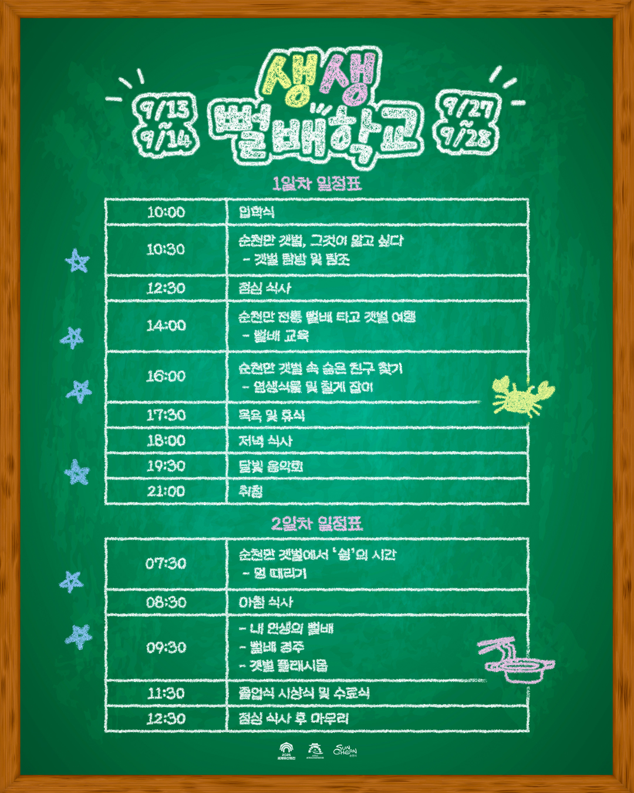

2025 생생뻘배학교
순천 거차마을에서 배우는 느림과 연결의 삶
 |
 |
📅 프로그램 일정
갯벌 위를 미끄러지듯 달리는 '뻘배'는 순천만의 삶을 상징하는 작은 배입니다.
이제 이 뻘배가 단순한 어업 도구를 넘어, 순천만의 문화자원으로 다시 태어나려 합니다.
"갯벌에 직접 나가서 뻘배를 타보면, 단순히 '재미'가 아닙니다.
뻘 속 생명, 그 생명을 돌보는 어민의 삶, 그 모든 것이 연결돼 있다는 걸 느끼게 됩니다."
생생뻘배학교는 '전시용 체험'이 아니라 지속 가능한 생태관광을 꿈꿉니다. 그 중심에는 마을이 있습니다. 입학식부터 갯벌 체험, 뻘배 교육, 달빛 음악회까지 하루하루를 오롯이 ‘쉼’과 ‘느림’으로 채워가는 시간입니다.
“뻘배는 우리 갯벌을 닮았습니다. 느리지만 묵묵하게 길을 내지요.”
순천만의 아침은 바다보다 먼저 깨어나는 사람들의 손끝에서 시작됩니다. 갯벌 위를 미끄러지듯 달리는 ‘뻘배’는 순천만의 삶을 상징하는 작은 배입니다. 이제 이 뻘배가 단순한 어업 도구를 넘어, 순천만의 문화자원으로 다시 태어나려 합니다.
거차마을이 여는 뻘배학교
생생뻘배학교는 거차마을 주민들이 직접 운영하는 1박 2일 생태학교입니다. 오랜 세월 뻘배와 함께 살아온 어민들이 직접 뻘배 타는 법을 가르치고, 참가자들은 갯벌 생태, 물때, 조류의 리듬을 온몸으로 체험하게 됩니다.
배움은 곧 연결입니다
단순한 체험이 아니라, 마을과 자연, 사람과 삶이 연결되는 진짜 배움의 시간입니다. 물결처럼 잔잔한 순천만의 오후, 해가 질 무렵엔 달빛 음악회도 열립니다. 뻘배는 순천만의 자연과 문화를 연결하는 새로운 배움의 플랫폼이 되어갑니다.
함께 하실래요?
생생뻘배학교는 순천세계유산축전 공모사업의 일환으로 운영되며, 순천만을 느끼고 마을과 연결되는 새로운 경험을 원하는 누구나 신청하실 수 있습니다.
지금 신청하기